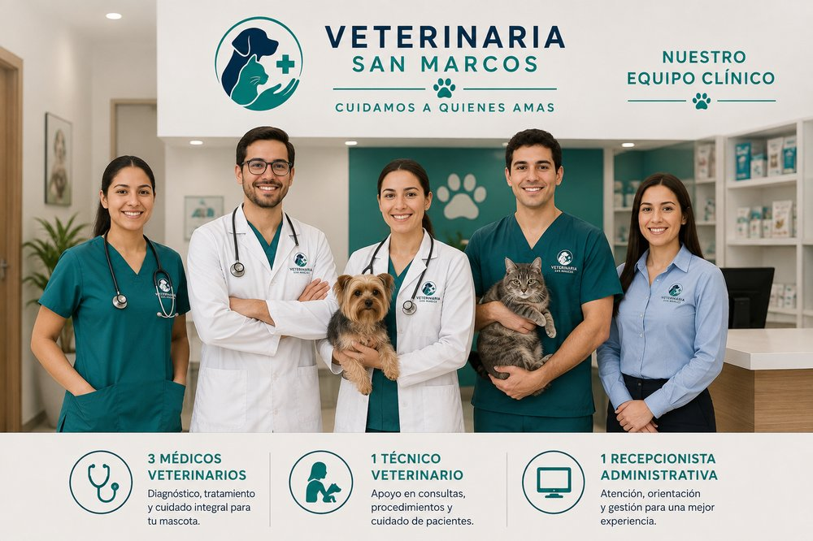
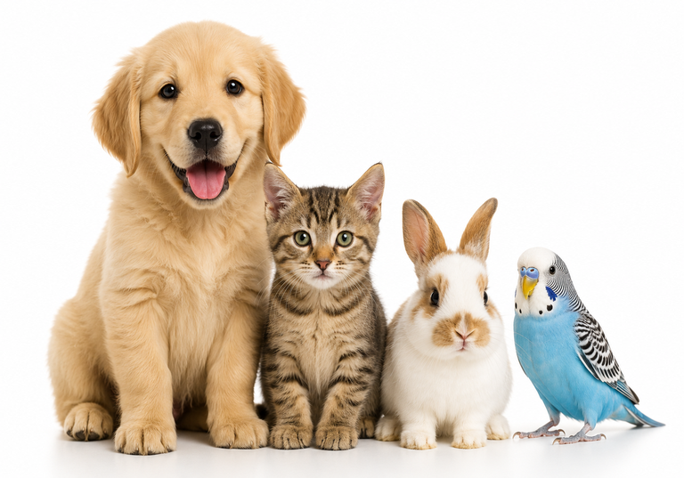
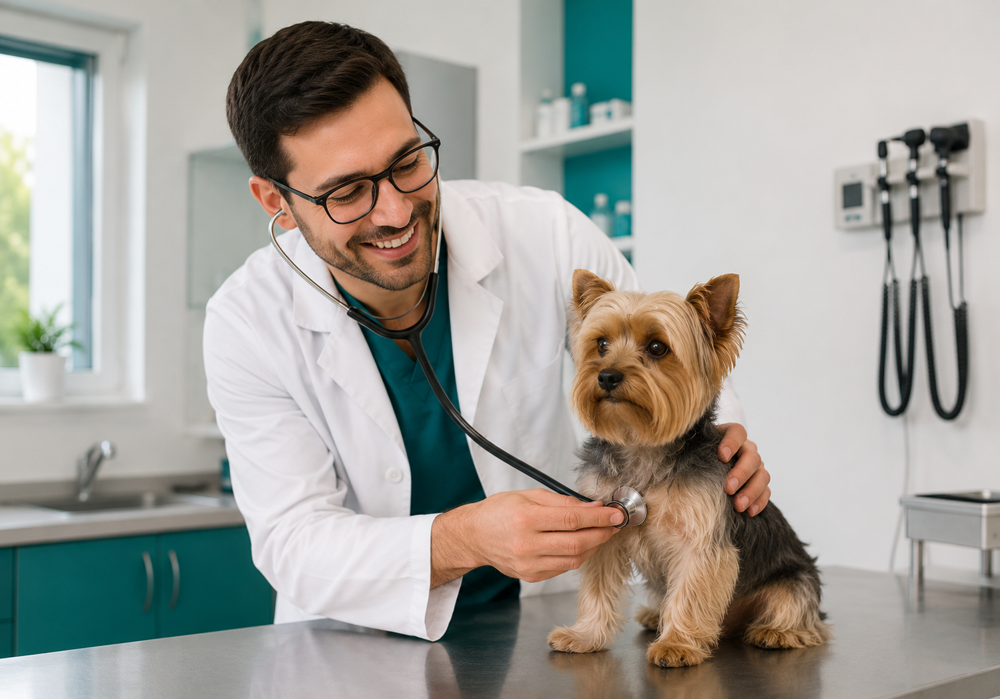

Nuestro equipo profesional esta conformado por:
- 3 médicos veterinarios
- 1 técnico veterinario
- 1 recepcionista administrativa
Quiénes somos
Fundada en 2009, Veterinaria San Marcos atiende a las familias y sus mascotas de Rancagua con cercanía y responsabilidad profesional.
Comenzamos como una consulta pequeña y hoy atendemos en promedio 25 pacientes por día. El aumento sostenido de atenciones en los últimos dos años nos impulsa a digitalizar procesos que antes dependían por completo del papel, como la agenda de citas y las fichas clínicas.


Principalmente perros y gatos, además de conejos y aves. Cada ficha clínica se adapta a las necesidades propias de la especie.

Que cada dueño o dueña pueda revisar el historial de su mascota, recibir aviso antes del vencimiento de una vacuna y pedir horas sin depender únicamente del teléfono.